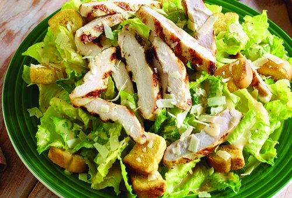

Ensalada Cesar

Ingredientes
- 1 lechuga francesa (500 grs)
- 100 gr queso emmental
- 20 grs champiñones tostados
- 60 grs beicon
- 100grs canonigos
- Aceite de oliva
- Vinagre de jerez
- Sal
- Pimienta
- ALIÑO
- 2 cucharadas de mostaza en grano
- 1 cucharada de aceite de oliva virgen
- 1 cucharada de vinagre
- Sal
- Pimienta
- Nuggets de pollo
Elaboración
- Freir los Nuggets, dejalos enfriar y cortalos en tiras
- Dorar el beicon con tiritas en una sartén con un poco de aceite. Añadir los piñones y rehogalos ligeramente.
- Prepara la salsa mezclando el Yogurt, con el aceite, el vinagre y la mostaza, sazonala con sal y pimienta y sirvela con la ensalada.